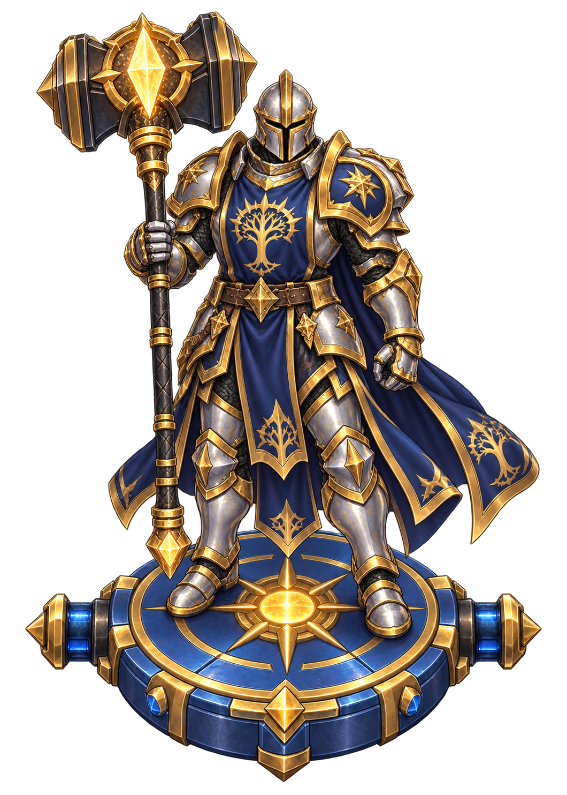
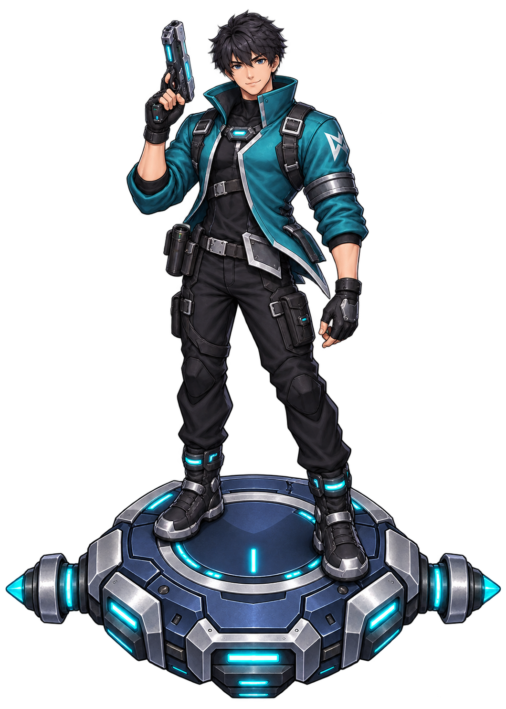
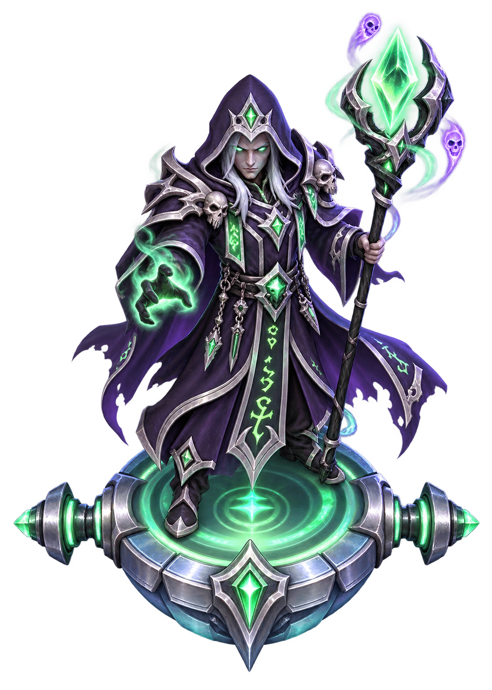
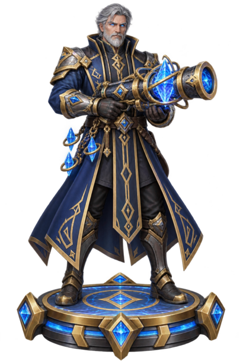
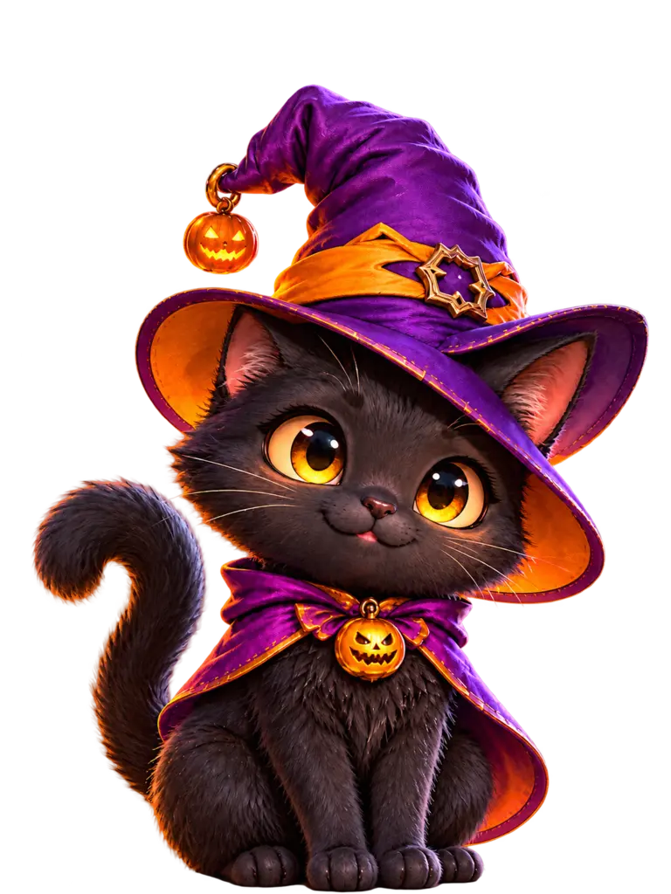
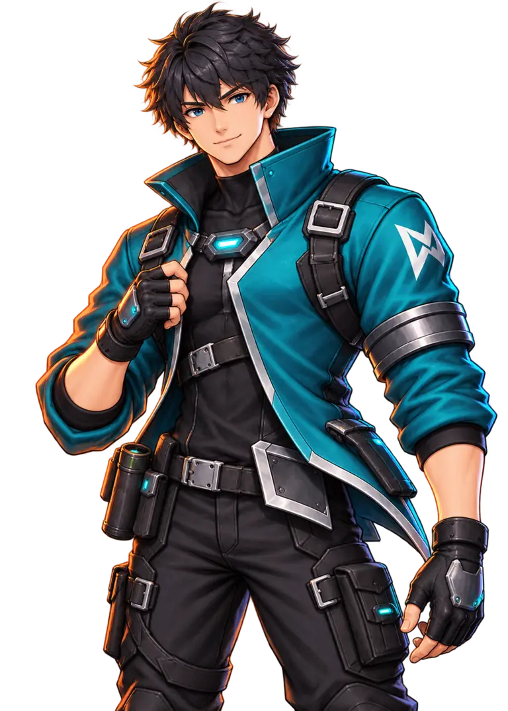
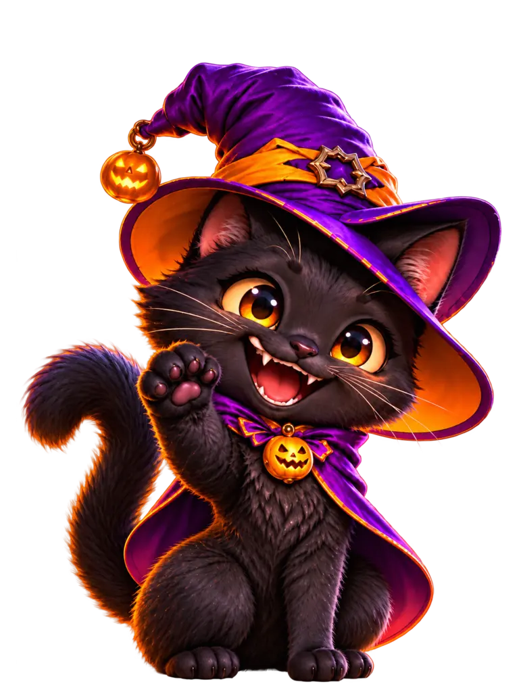

Aldric
Hüter des Morgenlichts
2 Grundschaden · 0,75× Feuerrate
Jeder 4. Treffer explodiert.
Dein nächstes Abenteuer wartet.
🎃 HALLOWEEN-EVENT 🎃BEREIT FÜR DIE NÄCHSTE RUNDE
Verbessere deinen Start mit den gesammelten Münzen. Diese Käufe bleiben nach einer Niederlage erhalten.
Krit-Upgrades addieren Prozentpunkte: +1 % Chance und +25 % Krit-Schaden je Stufe. Gilt ab der nächsten Runde für alle Helden.
Münzen steigen mit Level und Schwierigkeit. Jedes Level hat je Schwierigkeit einen eigenen Erstabschlussbonus.
DEIN TEAM
Dein Schütze steht in der Mitte. Links und rechts ist Platz für zwei weitere Helden mit eigenen Waffen.

SchützePistole · Aktiv
Hüter des Morgenlichts
2 Grundschaden · 0,75× Feuerrate
Jeder 4. Treffer explodiert.

Herr der gebundenen Seelen
1,2 Grundschaden · 0,85× Feuerrate · 5 % Krit
Beschwört Seelen aus besiegten Segmenten.

Meisterin der toxischen Essenzen
0,8 Grundschaden · 0,9× Feuerrate
Stapelt Gift und verbreitet es über die Schlange.

Meister der lebenden Runen
1,0 Grundschaden · 0,95× Feuerrate
Vollendet Runen und löst Kettenexplosionen aus.

Hüterin des Winterherzens
0,9 Grundschaden · 0,80× Feuerrate
Verlangsamt, friert ein und löst Eisbrüche aus.

Meisterin der Glut
1,0 Grundschaden · 0,85× Feuerrate
Entzündet Segmente und entfesselt Kettenexplosionen.
Ilyra und Seraphine sind kostenlos freigeschaltet. Erster kostenpflichtiger Begleiter: 100 Münzen · jeder weitere: 300 Münzen. Ein belegter Platz wird getauscht oder ersetzt.
Sekundärhelden kämpfen in einer kleineren Reihe hinter deinem Hauptteam. Nach jedem Hauptupgrade folgt eine eigene Auswahl mit bis zu drei Sekundärfähigkeiten.

Der Bananenwerfer
Sekundärheld · Verlangsamung und Bodenkontrolle
Wirft Bananenschalen, Haufen und rutschige Flecken.

Die Fluchweberin
Sekundärheld · Debuff und Schadensverstärkung
Markiert Schwachstellen für das gesamte Team.
Kiko und Mirel sind kostenlos freigeschaltet und belegen ausschließlich Sekundärslots.
Freischaltung und Platz werden im Browser gespeichert.
Orange schaltet besonders starke Heldenfähigkeiten frei. Nur verfügbare Stufen werden gezogen; ohne oranges Angebot verteilen sich die Chancen anteilig auf die übrigen Stufen.
Ein Kauf verbessert alle angezeigten Seltenheiten dieses Skills. Wirkt ab der nächsten Runde. Run-Upgrades müssen weiterhin im Spiel gewählt werden. Die Schützen-Upgrades verbessern die gemeinsamen Upgrade-Karten.
DEIN FORTSCHRITT
ADMIN-WERKZEUGE
Testläufe benötigen keine Freischaltung und vergeben keine Münzen oder Levelfortschritte. Noch nicht umgesetzte Event-Level sind gesperrt.
Öffne diese Seite auf dem Gerät, dessen Spielfeldgröße als Vorlage dienen soll. Tippe auf den Knopf, wenn die Browserleisten so stehen wie beim normalen Spielen.
Noch keine Messung durchgeführt.
Nur in diesem Browser gespeichert. Beim Löschen der Websitedaten geht der Fortschritt verloren. Sichere ihn als Datei oder kopiere den Sicherungstext.
Münzen, Käufe, Rekord und freigeschaltete Level werden gespeichert. Eine laufende Runde startet nach dem Neuladen neu.
Version 26.2 Test · Admin-Levelauswahl


HALLOWEEN-EVENT

DAUERHAFTE EVENT-WERTE
ZEIT ANGEHALTEN
Wähle zuerst eine Fähigkeit für deine Haupthelden.
Ein Fehler hat die Runde angehalten. Du kannst versuchen, sie fortzusetzen. Falls der Fehler erneut erscheint, schicke bitte einen Screenshot dieser Meldung.
DIE SCHLANGE WAR SCHNELLER
Erreichte Punkte: 0
Touch: wischen · PC: Pfeiltasten oder A/D